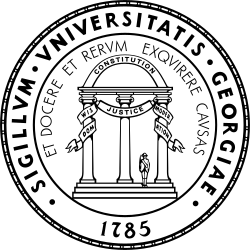
University of Georgia佐治亚大学
Ph.D. in Computer Science计算机科学 博士Aug 2023 – Dec 20262023.08 – 2026.12
I am Yiwei Li (李轶为), a Ph.D. graduate in Computer Science from the University of Georgia (2026), where I was fortunate to be advised by Prof. Tianming Liu. I am also affiliated with CAMCA, Harvard Medical School, where I am fortunate to be mentored by Dr. Quanzheng Li and Dr. Xiang Li, and equally grateful to work closely with Dr. Lin Zhao (New Jersey Institute of Technology). I spent the summers of 2025 and 2026 as a Research Scientist Intern at United Imaging Intelligence (Boston), where I was mentored by Dr. Yikang Liu and Dr. Shanhui Sun. Earlier, I earned my B.S. from the Chien-Shiung Wu Honors College and my M.S. at Southeast University, the latter under the kind guidance of Prof. Hanchuan Peng on computational neuroscience. My work has received 3,900+ citations.
My research centers on multimodal large models (VLMs), video generation, world models, and reinforcement learning — building systems that perceive, reason, and act across modalities, with a strong pull toward AI4Med and AI4Sci.
我是李轶为（Yiwei Li），佐治亚大学计算机科学博士毕业生（2026 届），有幸师从 Tianming Liu 教授。我同时隶属于哈佛医学院 CAMCA，有幸受到 Quanzheng Li 博士与 Xiang Li 博士的指导，并十分感谢与新泽西理工学院 Lin Zhao 博士的密切合作。2025 与 2026 年夏季，我在联影智能（波士顿）担任研究科学家实习生，受 Yikang Liu 博士与 Shanhui Sun 博士指导。此前，我在东南大学吴健雄学院获学士学位，并于东南大学获硕士学位，硕士期间承蒙 Hanchuan Peng 教授悉心指导，从事计算神经科学研究。我的工作已获得 3,900+ 次引用。
我的研究聚焦于多模态大模型（VLM）、视频生成、世界模型与强化学习——构建能够跨模态感知、推理与行动的智能系统，并对 AI4Med 与 AI4Sci 抱有浓厚兴趣。
"Bridge the gap between machine intelligence and the human brain — the essence of AGI will, ultimately, be multimodal."
“弥合机器智能与人脑之间的鸿沟——AGI 的本质，终将是多模态的。”
🎓 Graduating at the end of 2026 and on the full-time job market — seeking research-scientist / applied-scientist roles starting 2027. Reach out if there's a good fit.
🎓 我将于 2026 年底毕业，目前正在寻找全职工作——2027 年入职的研究科学家 / 应用科学家岗位。欢迎联系我！
Annotated reference images let a VLM identify, localize, and segment fine anatomical structures in unlabeled targets — no per-dataset fine-tuning, and it generalizes out of distribution.
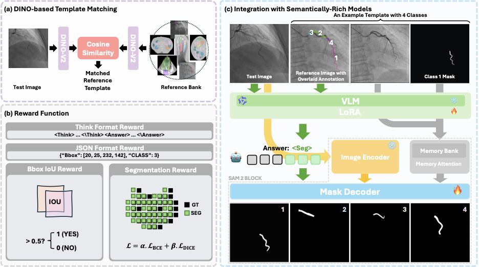
ECG signals drive controllable echocardiogram video generation, tying synthesized cardiac motion directly to physiological input.
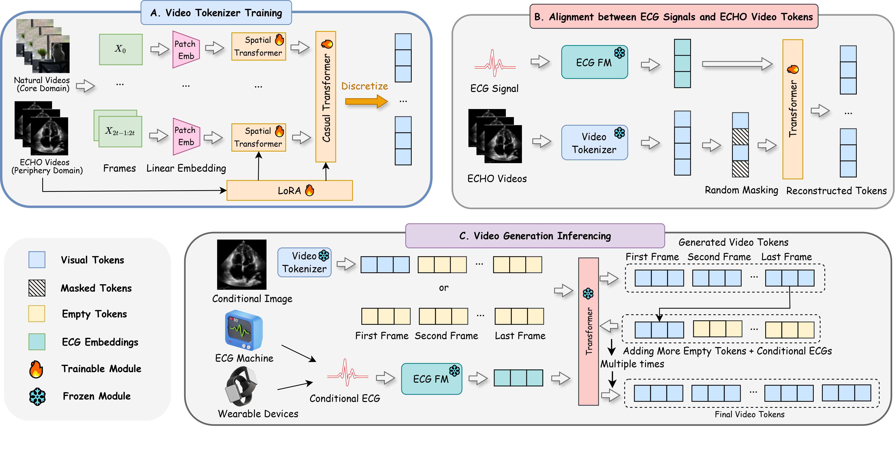
Radiologists' eye-tracking becomes visual-reasoning supervision — special gaze tokens teach a medical VLM to acquire evidence in a human-like, step-by-step order.
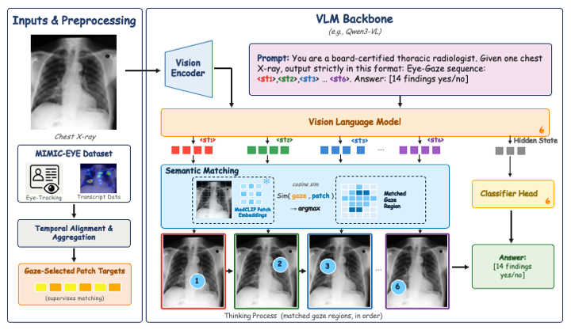
GazeWorld treats an image as an environment and a radiologist's gaze as a trajectory, autoregressively predicting patch representations to learn diagnostic features — with no gaze needed at inference.
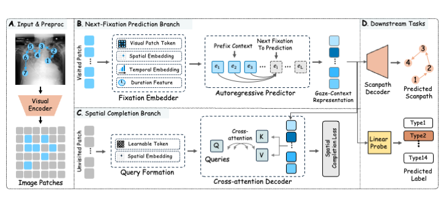
A NISQ-aware quantum adapter injects lightweight quantum layers into medical VLMs, improving efficiency under limited-qubit constraints.
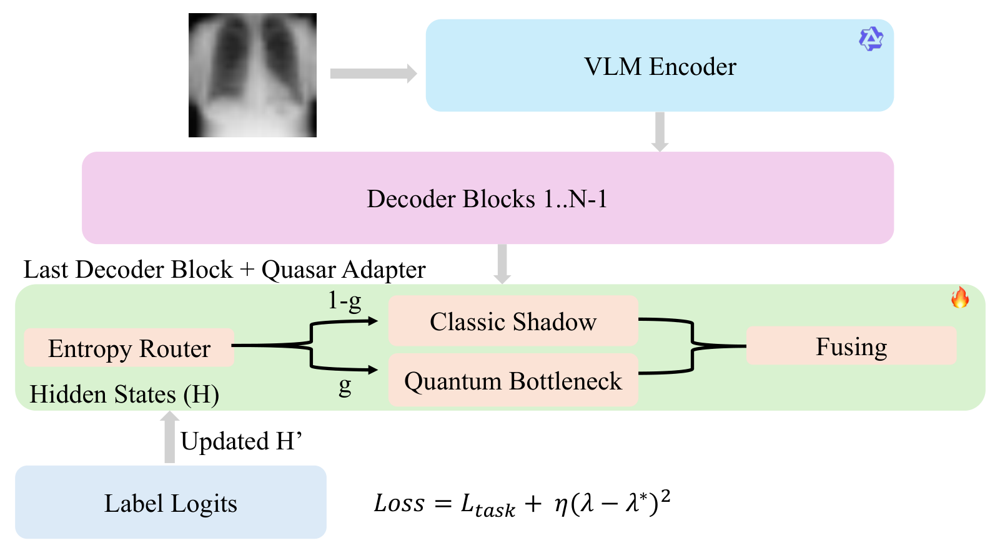
A systematic study of how large language models can support design, planning, and control across the manufacturing pipeline.
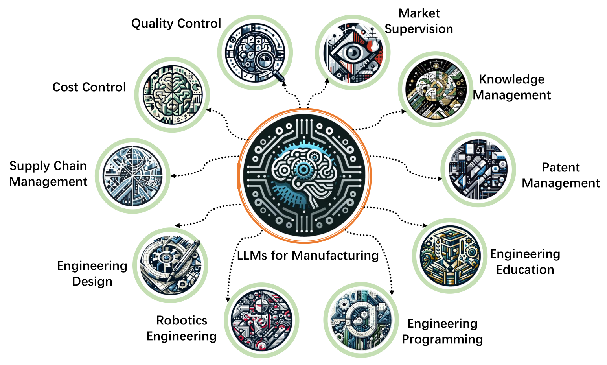
A vision foundation model for echocardiography, pretrained on 20M+ echo images via spatio-temporal masked autoencoding and periodic contrastive learning, transferring across the clinical echo workflow.
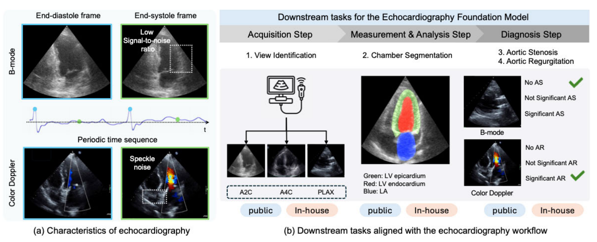
Test-Time Training layers give U-Net a sequence-modeling inductive bias, adapting features to each input for stronger biomedical segmentation.
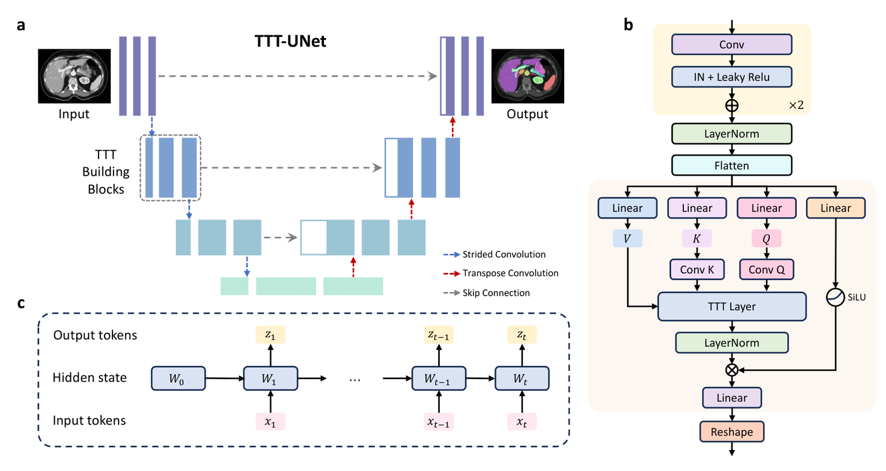
Radiologists' eye-gaze guides a spiking Transformer's attention through an MSE alignment loss, bringing energy-efficient SNNs to medical image classification.
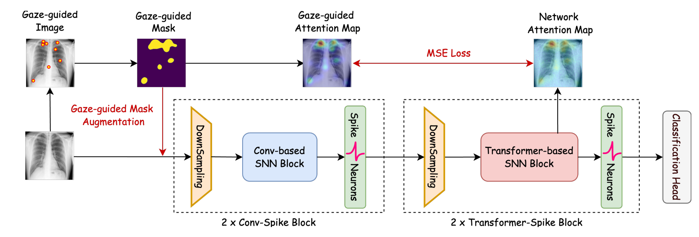
Radiologists' eye-gaze supervises image–text alignment, grounding medical representation learning in human visual attention.
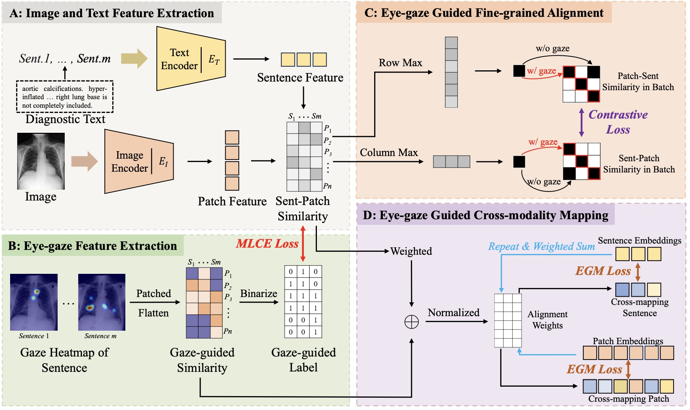
An autonomous GPT agent that gathers and analyzes Alzheimer's-disease news for public-health infodemiology.
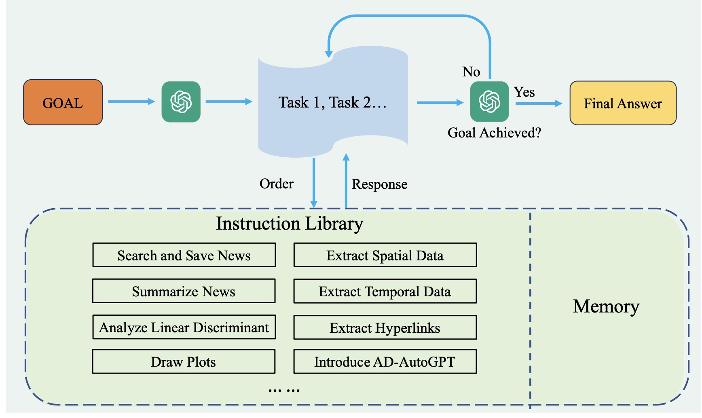
A re-tracing strategy corrects backbone deviation to refine automatic single-neuron reconstruction.
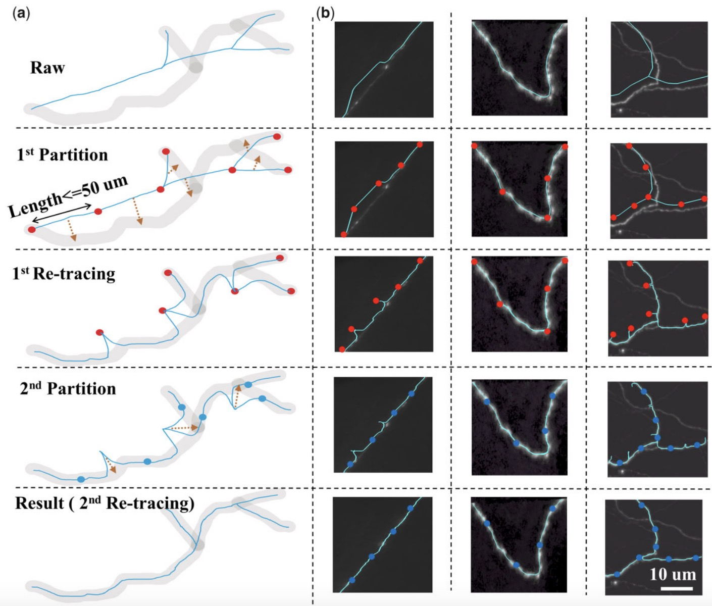
Light human hints plus a permutation-invariant critic let agents regroup on the fly, cutting the human input needed to coordinate multi-agent RL.
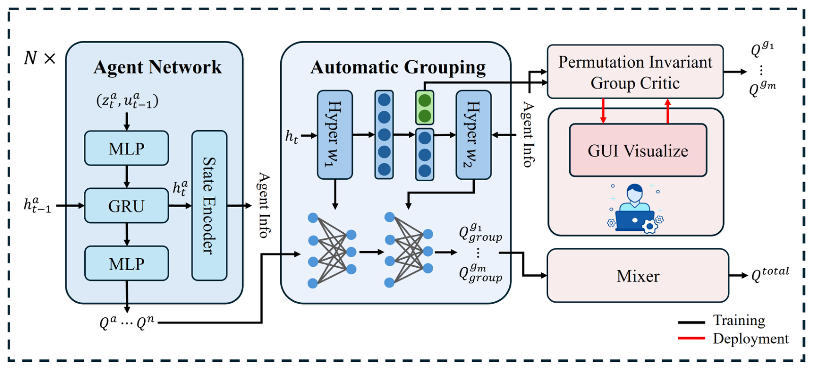
An instruction-tuned large language model specialized for radiology, outperforming general LLMs on radiological reasoning and reporting.
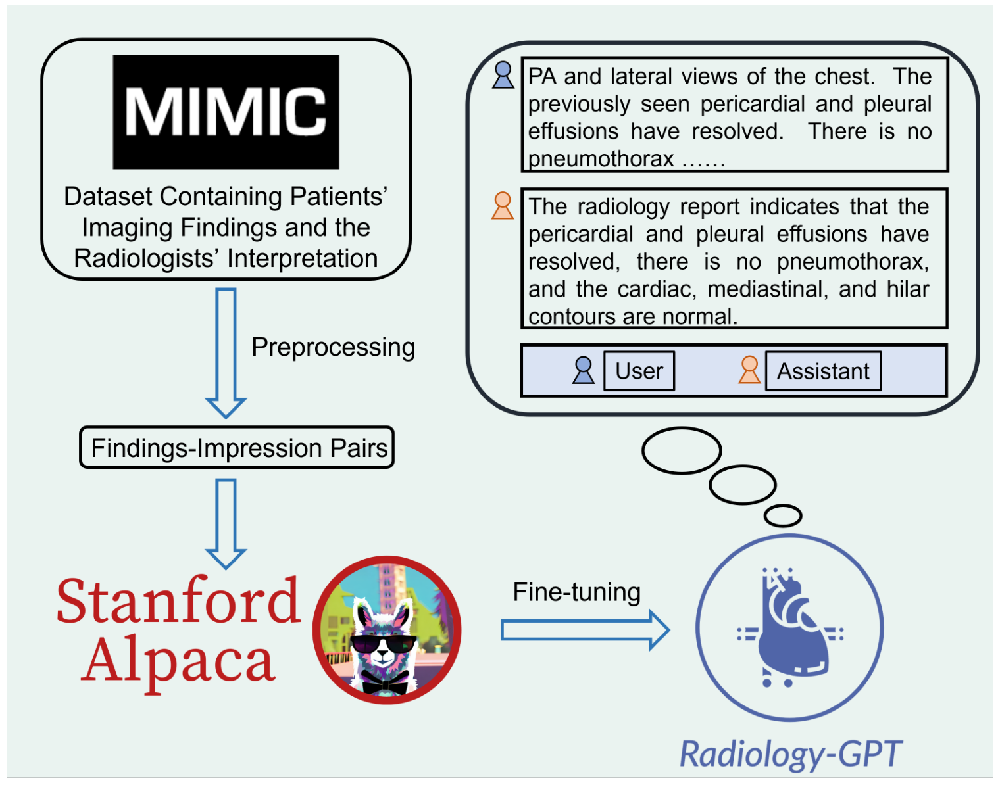
Multiview images give a large language model richer 3-D scene understanding than single-view or point-cloud input alone.
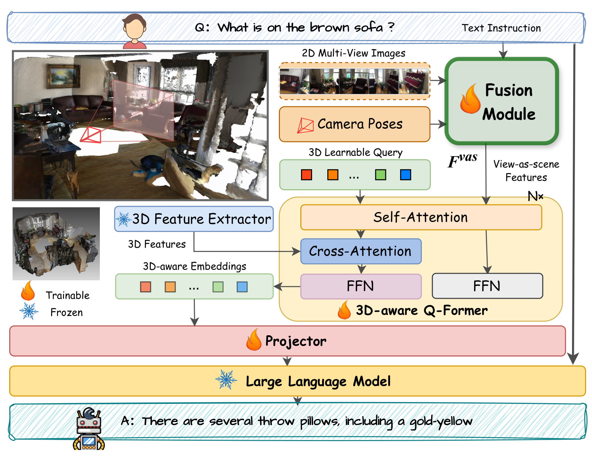

Outside of research, I enjoy playing basketball and cooking. I am also kept company by my two adorable cats, Dollar and Rainbow.
科研之外，我喜欢打篮球和做饭。家里还有两只可爱的猫咪——Dollar 和 Rainbow。
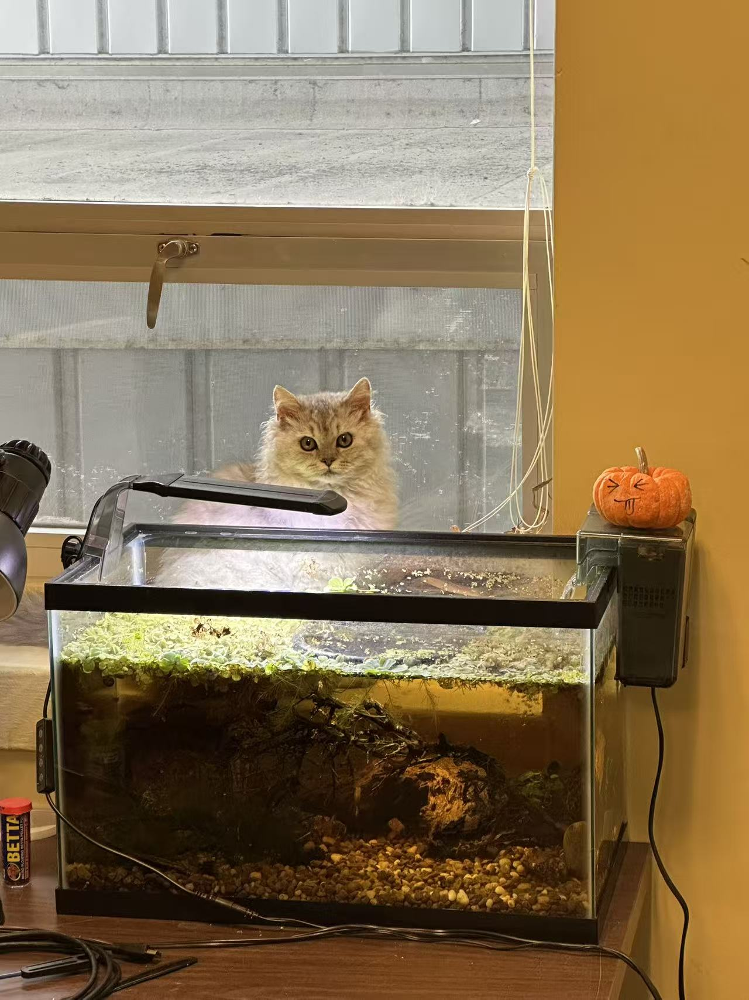